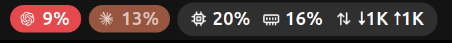
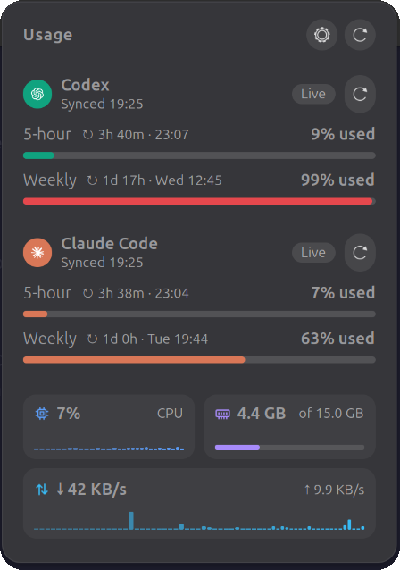

Usage limits in your top bar.
Superbar shows Codex and Claude Code usage in GNOME Shell.
$ curl -fsSL https://kbohara315.github.io/superbar/install.sh | bash


What it does
- Pills
- One per provider, with its primary-window usage. A pill turns red at 90%. The capsule beside them shows the system metrics you enable.
- Usage windows
- Primary (usually 5-hour) and secondary (usually weekly), each with percent used, a bar, and a reset countdown when the provider reports one.
- Failures
- If a fetch fails, the last good values stay and the card is marked stale. With no earlier snapshot, values show
—. - System metrics
- CPU, memory, swap, disk, network, battery, temperature. Off by default. Read from
/procand/syswith no subprocess. - Refresh
- Providers every 60 seconds by default, never faster. Metrics from 1 second to 1 hour, each set separately.
- CLI
- A static Zig binary,
superbar, fetches provider usage and writes the snapshot the extension reads.
Provider data comes from upstream usage endpoints that may change. They are not stable public APIs.
Install
Needs GNOME Shell 50. No Zig required.
bash
$ curl -fsSL https://kbohara315.github.io/superbar/install.sh | bash- The script downloads the latest release for your architecture, x86_64 or aarch64, and checks its SHA-256.
- It installs the CLI to
~/.local/binand the extension under~/.local/share/gnome-shell/extensions. - Enable Superbar in the Extensions app. If it doesn’t show up, log out and back in.
- Pin a version
- Add
-s -- v0.1.0afterbash. - Tarball
- Download one from Releases and run
scripts/install.sh. - From source
- With Zig 0.17.0:
zig build && scripts/install.sh. - Remove
- Run
scripts/uninstall.sh.